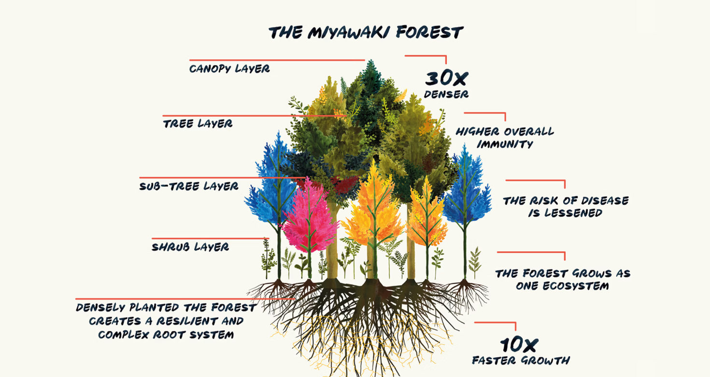

<!DOCTYPE html>
<html lang="en">
<head>
    <meta charset="UTF-8">
    <title>Miyawaki Forest Method</title>
    <link rel="stylesheet" href="style.css">
</head>
<body>

<header>
    <h1>Miyawaki Forests</h1>
    <p>Ultra-dense and fast-growing urban forests for a sustainable planet.</p>
</header>

<nav>
    <a href="index.html">Home</a>
    <a href="efforts.html">Global Efforts</a>
    <a href="miyawaki.html">Miyawaki Forests</a>
    <a href="shopping.html">Shopping</a>
    <a href="fundraiser.html">Fundraiser</a>
</nav>
<section>
    <h2>What is the Miyawaki Method?</h2>
    <p>
        The Miyawaki Technique, developed by Dr. Akira Miyawaki, is an innovative afforestation approach.
        It enables forest growth <strong>up to 10 times faster</strong>, creates <strong>30 times higher density</strong>,
        and supports <strong>100 times more biodiversity</strong> than conventional plantation methods.
    </p>

    

    <h2>How It Works</h2>
    <p>
        This method involves selecting native tree species, enriching the soil with organic materials,
        planting saplings very close together, and allowing natural succession to accelerate growth.
        Within 23 years, the forest becomes fully self-sustaining, requiring minimal or no human intervention.
    </p>

    <h2>Benefits of Miyawaki Forests</h2>

    <table>
        <tr>
            <th>Benefit</th>
            <th>Impact</th>
        </tr>
        <tr>
            <td>Rapid Growth</td>
            <td>Canopy formation and biomass increase up to 10× faster</td>
        </tr>
        <tr>
            <td>Biodiversity</td>
            <td>Encourages habitation by birds, insects, and small mammals</td>
        </tr>
        <tr>
            <td>Climate Resilience</td>
            <td>Sequesters CO‚ and helps reduce urban heat island effect</td>
        </tr>
        <tr>
            <td>Low Maintenance</td>
            <td>Self-sustaining after 23 years with no irrigation required</td>
        </tr>
    </table>
</section>

<footer>
    <p>Made by Karan, Jash, Ridham, and Vivan</p>
</footer>

</body>
</html>
